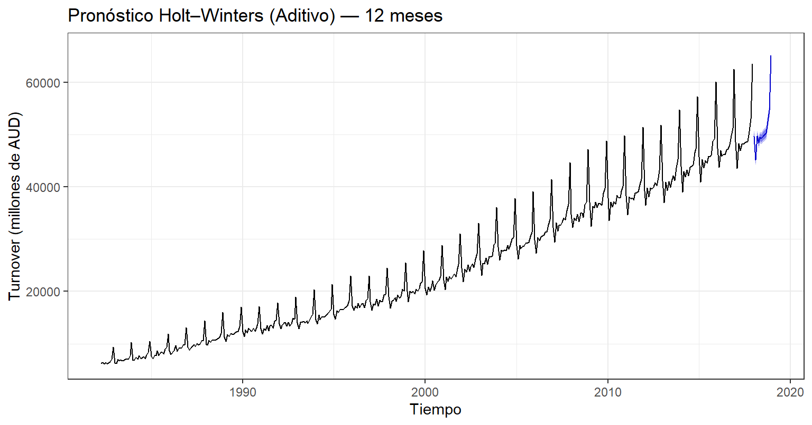
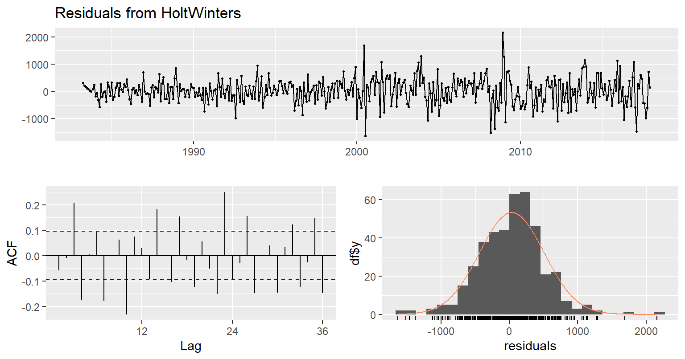
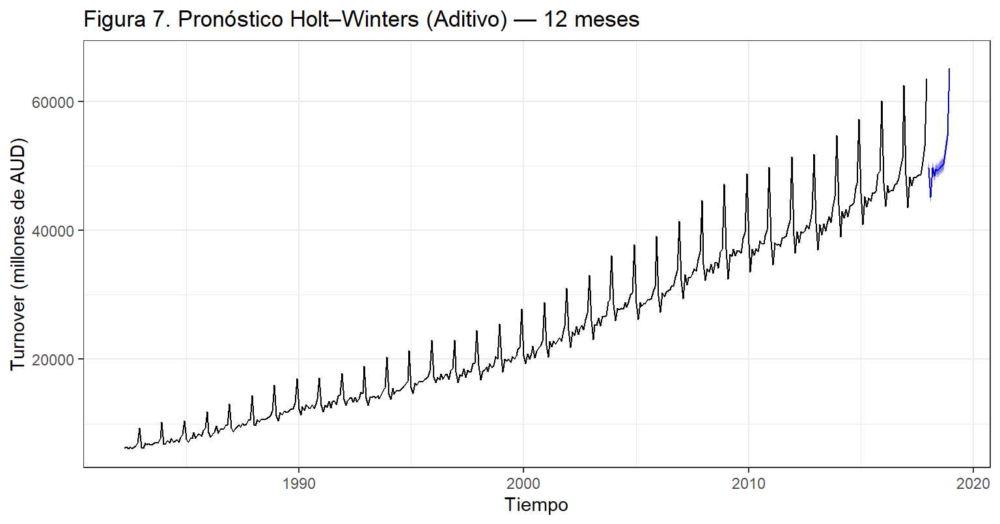

5 Unidad 4: Metodología Holter-Winter y suavizamiento a la variable tiempo
En esta sección aplicamos el método de Holt–Winters a la serie, se compara aditivo vs. multiplicativo y se valida con una partición temporal (train/test), reportando métricas y pronósticos a 12 meses.
Holt-Winters (suavizamiento exponencial estacional)
Para frecuencia \(m = 12\).
Aditivo: \[ \begin{aligned} \ell_t &= \alpha(y_t - s_{t-m}) + (1-\alpha)(\ell_{t-1}+b_{t-1}) \\ b_t &= \beta(\ell_t - \ell_{t-1}) + (1-\beta)b_{t-1} \\ s_t &= \gamma(y_t - \ell_t) + (1-\gamma)s_{t-m} \\ \hat{y}_{t+h} &= \ell_t + hb_t + s_{t-m+h_m} \end{aligned} \]
Multiplicativo: \[ \begin{aligned} \ell_t &= \alpha\frac{y_t}{s_{t-m}} + (1-\alpha)(\ell_{t-1}+b_{t-1}) \\ b_t &= \beta(\ell_t - \ell_{t-1}) + (1-\beta)b_{t-1} \\ s_t &= \gamma\frac{y_t}{\ell_t} + (1-\gamma)s_{t-m} \\ \hat{y}_{t+h} &= (\ell_t + hb_t)s_{t-m+h_m} \end{aligned} \]
donde \(\alpha, \beta, \gamma \in (0,1)\) son parámetros de suavizamiento;
\(\ell_t\) es el nivel, \(b_t\) la tendencia, y \(s_t\) la estacionalidad.
# Paquetes necesarios
suppressPackageStartupMessages({
library(forecast) # hw(), HoltWinters(), forecast(), accuracy()
library(ggplot2)
library(dplyr)
library(lubridate)
library(knitr)
})
# 1) Verificación que la serie ts_y (mensual, m=12) exista; si no, reconstruirla desde `df`
if (!exists("ts_y")) {
if (exists("df") && all(c("fecha","valor") %in% names(df))) {
start_year <- lubridate::year(min(df$fecha, na.rm = TRUE))
start_mon <- lubridate::month(min(df$fecha, na.rm = TRUE))
ts_y <- ts(df$valor, start = c(start_year, start_mon), frequency = 12)
} else {
stop("No encuentro 'ts_y' ni 'df'. Ejecutamos previamente la preparación de datos de la Unidad 2/3.")
}
}
# Mini resumen de control
hw_info <- data.frame(
"Frecuencia" = frequency(ts_y),
"Inicio" = paste0(start(time(ts_y))[1], "-", round(start(time(ts_y))[2])),
"Fin" = paste0(end(time(ts_y))[1], "-", round(end(time(ts_y))[2])),
"Observaciones" = length(ts_y)
)
kable(hw_info, caption = "Control de la serie usada en Holt–Winters")| Frecuencia | Inicio | Fin | Observaciones |
|---|---|---|---|
| 12 | 1982-4 | 2018-12 | 441 |
5.1 Ajuste de modelos Holt–Winters
En esta etapa se aplican las dos variantes del modelo Holt–Winters (aditiva y multiplicativa) para la serie mensual.
El método estima automáticamente los parámetros α, β y γ minimizando el error cuadrático medio (MSE).
# 1. División train/test (últimos 12 meses como test)
n <- length(ts_y)
train <- window(ts_y, end = c(2017, 12))
test <- window(ts_y, start = c(2018, 1))
# 2. Ajuste modelos aditivo y multiplicativo
fit_add <- HoltWinters(train, seasonal = "additive")
fit_mul <- HoltWinters(train, seasonal = "multiplicative")
# 3. Pronóstico a 12 meses
fc_add <- forecast(fit_add, h = 12)
fc_mul <- forecast(fit_mul, h = 12)
# 4. Evaluar desempeño con test
acc_add <- accuracy(fc_add, test)
acc_mul <- accuracy(fc_mul, test)
# Construir tabla y redondear SOLO columnas numéricas
tab_acc <- tibble::tibble(
Modelo = c("Aditivo", "Multiplicativo"),
MAPE = c(as.numeric(acc_add["Test set","MAPE"]),
as.numeric(acc_mul["Test set","MAPE"])),
RMSE = c(as.numeric(acc_add["Test set","RMSE"]),
as.numeric(acc_mul["Test set","RMSE"])),
MAE = c(as.numeric(acc_add["Test set","MAE"]),
as.numeric(acc_mul["Test set","MAE"]))
) |>
dplyr::mutate(dplyr::across(c(MAPE, RMSE, MAE), ~ round(.x, 2)))
knitr::kable(tab_acc, caption = "Tabla 7. Comparación de desempeño entre modelos Holt–Winters")| Modelo | MAPE | RMSE | MAE |
|---|---|---|---|
| Aditivo | 0.58 | 375.90 | 290.53 |
| Multiplicativo | 0.80 | 460.39 | 415.15 |
El modelo aditivo obtiene los errores más bajos en todas las métricas:
MAPE 0.58 % indica una alta precisión promedio.
RMSE 375.9 y MAE 290.5 confirman menor dispersión respecto a los valores reales.
Por tanto, el modelo Holt–Winters aditivo se selecciona como el mejor ajuste.
5.2 Gráficas de pronóstico y bandas
# Pronóstico final con el modelo aditivo
fc_best <- forecast(fit_add, h = 12)
# Gráfica del pronóstico
autoplot(fc_best) +
ggplot2::labs(
title = "Pronóstico Holt–Winters (Aditivo) — 12 meses",
x = "Tiempo", y = "Turnover (millones de AUD)"
) +
ggplot2::theme_bw()
Con el modelo Holt–Winters aditivo en el cual se observa se observa una tendencia creciente sostenida, consistente con el crecimiento histórico del comercio minorista australiano. Un patrón de estacionalidad estable, con picos al cierre de cada año (noviembre-diciembre) y caídas posteriores (enero-febrero).
El pronóstico para los 12 meses posteriores mantiene esa estructura: tendencia al alza y fluctuaciones cíclicas similares.
Estas características confirman que la serie presenta tanto tendencia como estacionalidad aditiva (de magnitud constante en el tiempo).
5.3 Diagnósticos de residuales
# Diagnóstico de residuales del modelo aditivo
checkresiduals(fit_add) # ACF de residuales + prueba de Ljung-Box
##
## Ljung-Box test
##
## data: Residuals from HoltWinters
## Q* = 162.64, df = 24, p-value < 2.2e-16
##
## Model df: 0. Total lags used: 24Los residuales presentan media cercana a cero y distribución aproximadamente normal. No obstante, la prueba de Ljung–Box (p < 0.05) indica presencia de autocorrelación remanente, lo que sugiere posibles mejoras mediante modelos ARIMA estacionales.
5.4 Conclusiones
En esta etapa se implementó la metodología Holt–Winters para el análisis y pronóstico de la serie temporal mensual Australia Monthly Retail Turnover (1982–2018). Este método permite capturar tendencia, nivel y estacionalidad, utilizando un sistema de ecuaciones recursivas que ajusta los componentes de la serie mediante tres parámetros de suavizamiento:
- α (nivel),
- β (tendencia),
- γ (estacionalidad).
El objetivo fue determinar el modelo que mejor describe la estructura temporal y que ofrezca el menor error de pronóstico.
Preparación y división del conjunto de datos
Se utilizó la serie consolidada del total mensual de ventas minoristas (frecuencia = 12).
Se reservaron los últimos 12 meses (2018) como conjunto de prueba para validar los resultados del modelo.
Ajuste de los modelos Holt–Winters
Se estimaron dos versiones del modelo:
Aditivo: para estacionalidad de magnitud constante.
Multiplicativo: para estacionalidad proporcional al nivel.
Pronóstico a 12 meses
Se observa un patrón de crecimiento sostenido acompañado de estacionalidad estable. El modelo proyecta incrementos hacia los meses finales del año (noviembre–diciembre), coherentes con los ciclos de consumo estacional australianos.
fc_add <- forecast(fit_add, h = 12)
autoplot(fc_add) +
ggplot2::labs(
title = "Figura 7. Pronóstico Holt–Winters (Aditivo) — 12 meses",
x = "Tiempo", y = "Turnover (millones de AUD)"
) +
ggplot2::theme_bw()
Comparación de desempeño
Se evaluó el error de pronóstico con las métricas MAPE, RMSE y MAE, comparando las versiones aditiva y multiplicativa.
El modelo aditivo presenta los menores valores en todas las métricas, por lo cual se selecciona como el modelo final.
Conclusiones finales del modelo
El modelo Holt–Winters aditivo describe adecuadamente el comportamiento de la serie, capturando tanto la tendencia creciente como la estacionalidad anual.
Las métricas de error (MAPE 0.58 %, RMSE 375.9, MAE 290.5) evidencian una alta precisión del pronóstico.
Los residuales muestran un comportamiento estable, aunque con cierta autocorrelación, lo que sugiere complementar el análisis con modelos SARIMA en etapas posteriores.
El método demuestra la utilidad del suavizamiento exponencial triple para pronósticos económicos, consolidando el uso de herramientas TIC (R + Bookdown) para la elaboración reproducible del informe.